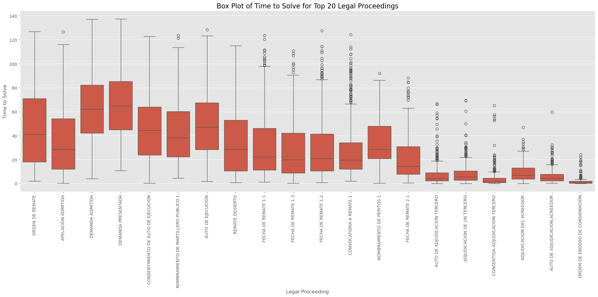
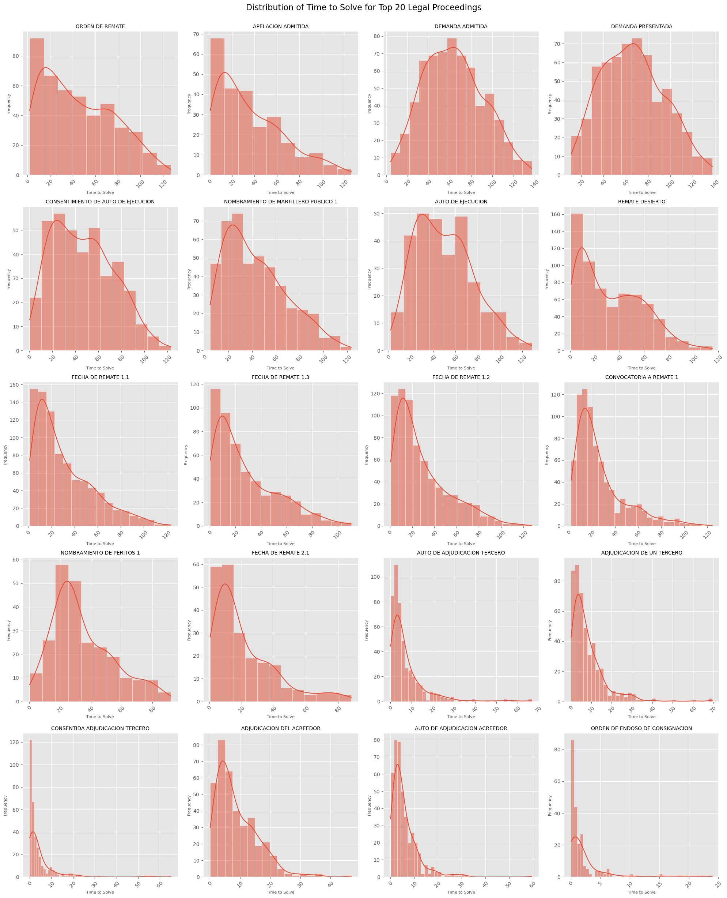

In this tab:
Introduction
Accurate prediction of foreclosure timelines is critical for optimizing the valuation of distressed mortgage assets. Foreclosure dates play a crucial role in estimating asset recovery values within a mortgage portfolio, serving as a baseline for portfolio valuation and the structuring of settlements or other termination strategies. The ability to forecast these timelines with precision allows for better risk management, enhanced asset recovery, and more informed decisions regarding portfolio performance.
This report examines the current predictive model for foreclosure times and introduces an enhanced approach aimed at improving the accuracy and reliability of these predictions. The new model focuses on predicting the duration required to resolve each legal proceeding within foreclosure cases, offering significant improvements in accuracy. These advancements are essential for supporting strategic financial decisions and effectively managing Non-Performing Loans (NPLs), which often involve high Loan-to-Value (LTV) ratios and extended delinquency periods
Dataset Description
The dataset used in this project contains detailed information on over 1,200 mortgage foreclosure cases in Peru, each of which has been fully resolved. For each case, the dataset includes all the legal proceedings that occurred throughout its duration. This comprehensive data is crucial for understanding the factors that influence the time it takes to resolve these cases, providing a solid foundation for the predictive models developed in this project. Key columns in the dataset include:
Portfolio Name: Identifies the portfolio to which the legal case belongs.
Legal File Name: A unique identifier for each legal case.
Date: The date of each legal proceeding.
Legal Stage: The stage of the legal process
Legal Proceeding: The specific type of legal action taken within the case.
Foreclosure Initial Date: The date when the foreclosure process began.
Resolution Date: The date when the case was resolved.
Time to Solve: The duration between the date of the proceeding and the resolution of the case.
Geographical Information: Including Zone, Region, and Zone Group, which provide context on where the case is being handled.
Case Characteristics: Such as whether an appeal (cassation) was involved (Tiene Casacion) and the central stage of the legal process (Etapa Central).
Methodology for Evaluating Regression Models
To ensure our predictive model’s accuracy and reliability, we use three key evaluation metrics:
- Mean Absolute Error (MAE)
- Measures the average difference between predicted and actual resolution times
- Interpreted as: On average, how many months off are the model’s predictions?
- Lower MAE indicates higher accuracy
- Root Mean Squared Error (RMSE)
- Similar to MAE, but gives more weight to larger errors
- Provides insight into the magnitude of the model’s prediction mistakes
- Lower RMSE suggests better model performance
- R-squared (R²)
- Explains how well the model’s predictions match actual outcomes
- Expressed as a percentage (0-100%)
- Higher R² indicates the model captures more factors influencing resolution times
- Example: R² of 0.94 means the model explains 94% of variations in resolution times
Approach for Current Model
The current model predicts the resolution time for foreclosure cases by using historical averages. Specifically, it looks at past cases and calculates the average time it took to resolve cases based on the type of legal proceeding involved. For each new case, the model predicts the resolution time by matching it to similar cases from the past and applying the average time for those cases. The process involves:
Data Collection & Cleaning: We gathered and cleaned past foreclosure data to ensure reliability.
Grouping by Legal Proceeding: Cases were categorized by legal proceeding type, and average resolution times were calculated for each group.
Prediction: The model predicts resolution time based on the type of proceeding, using historical averages. If no match is found, an overall average is used. This straightforward approach assumes that past performance predicts future outcomes.
Evaluation of the Current Model’s Performance
To evaluate the effectiveness of our current model, we tested it against foreclosure cases that have already been resolved. This allows us to compare the model’s predictions with the actual resolution times and measure its accuracy. The key metrics we used are:
Mean Absolute Error (MAE): The model’s average prediction was off by 16.68 months. This means that, on average, the model’s predictions are almost 17 months away from the actual resolution time.
Root Mean Squared Error (RMSE): This metric, which emphasizes larger errors, shows a typical prediction error of 22.06 months. The higher error indicates that the model struggles with cases that deviate significantly from the average.
R-squared (R²): The model explains only 39% of the variance in resolution times. This low percentage suggests that the model does not capture many of the factors influencing how long a case will take.
While the model provides some predictive capability, its accuracy and reliability are inadequate. The significant errors and low variance explanation suggest the need for a more sophisticated approach.
Analysis of the Actual vs. Predicted Graph for the Current Model
The Actual vs. Predicted graph compares the model’s predictions with the actual resolution times for foreclosure cases. In an ideal scenario, all data points would lie along the diagonal line (red dashed line), indicating that the predicted values perfectly match the actual values.

However, in the graph for the current model:
Wide Dispersion: Many points are scattered far from the diagonal line, indicating large prediction errors. This spread reflects the model’s inaccuracies, particularly in cases where the actual resolution time deviates from the average.
Horizontal and Vertical Lines: These occur because the model uses average times for specific legal proceedings, leading to identical predictions for different cases. This approach doesn’t account for the variability within those cases, resulting in clusters of predictions that don’t match the actual outcomes.
For example, in a specific case where the actual resolution time was 30 months, the model might have predicted only 15 months based on the average for that type of proceeding. This discrepancy highlights the model’s tendency to underestimate or overestimate the resolution time, depending on how closely a case aligns with the historical average.
Limitations of Using Averages for Predicting Time to Solve
The graphs in this section displays the distribution of resolution times for the 20 most common legal proceedings. Each bar or line in the graph represents how resolution times are spread out for these specific types of proceedings.

Wide Variance: For many legal proceedings, there is a broad range of resolution times. When the distribution of these times is far from the mean (average), using that average as a prediction leads to significant errors. This is because the average fails to capture the true spread of the data, especially in cases with outliers or skewed distributions.
Skewed Distributions: In some cases, the distribution is heavily skewed, meaning that a few cases take much longer or shorter than most others. The average gets pulled in one direction, making it a poor predictor for the majority of cases.

- Non-Normal Distributions: Many proceedings have skewed or uneven distributions, meaning that most cases are not near the average time. Using a simple average as a predictor fails to account for these nuances, leading to significant errors.
In essence, relying on averages oversimplifies the prediction process and fails to account for the variability in actual case outcomes. This can lead to substantial inaccuracies, especially when the distribution is not centered around the mean
Random Forest Predictive Model
To enhance the accuracy of our foreclosure time predictions, we developed a Random Forest model. This advanced machine learning technique constructs multiple decision trees, each one analyzing different aspects of the data. By averaging the predictions from these trees, the model effectively manages the complexities of the dataset and minimizes the risk of overfitting.
Our model leverages a wide range of features, such as the sequence of legal proceedings, time intervals between actions, and specific attributes related to the courts handling the cases. By considering these diverse factors, the Random Forest model delivers predictions that are significantly more accurate and reliable
Model Development
1. Data Preprocessing: Cleaned dataset, removed irrelevant columns, handled missing values, and filtered for foreclosure cases. This ensures we’re working with accurate, relevant data.
2. Feature Engineering: We created features such as Months_Since_Start, Proceeding_Count, Months_Since_Last_Proceeding, Average_Months_Between_Proceedings, Distinct_Proceeding_Types, and Repeated_Proceeding_Count. These features capture key temporal, procedural, and case-specific aspects, improving prediction accuracy.
3. Encoding and Scaling: Applied Target Encoding for high-cardinality variables, Label Encoding for other categorical features, and StandardScaler for numerical features. This prepares the data for optimal model performance.
4. Model Training: Split the dataset, then trained a Random Forest with 300 trees. This approach leverages multiple decision trees to make robust predictions about foreclosure resolution times.
Results
The Random Forest model’s performance in predicting foreclosure resolution times is summarized by the following key metrics:
Mean Absolute Error (MAE): 4.89 months
Root Mean Squared Error (RMSE): 6.99 months
R-squared (R²): 0.94
These metrics indicate a high level of accuracy, with the model explaining 94% of the variance in the resolution times, and relatively low prediction errors.

Feature Importance
The bar chart ranks the importance of various features used by the model to make predictions. Added Features like Months_Since_Start, and Proceeding_Count emerge as the most significant factors influencing the resolution time.
Understanding which features most strongly affect the model’s predictions can provide valuable insights. For instance, the high importance of Months_Since_Start and Proceeding_Count highlights the relevance of the duration and frequency of legal actions in determining how long a foreclosure case will take to resolve.

This visualization provides a clear ranking of the features that have the most significant impact on the model’s predictions. It offers valuable insights into which factors are most influential in determining foreclosure resolution times.
Recommendations
Expand Features: Expand Features: Enhance the model’s accuracy by incorporating additional features, such as Loan-to-Value (LTV) ratios to help predict whether a foreclosure will be resolved by a third party or the creditor, along with economic indicators or more detailed geographic data.
Explore Advanced Techniques: Consider testing more advanced machine learning techniques in the future for further improvements
Integrate with Financial Tools: Integrate the model’s predictions into existing financial systems to support seamless decision-making and help structure DPO (Discounted Payoff) agreements more effectively.
In this section:
Data Loading and Preprocessing
First, we’ll import the necessary libraries and load our dataset. We’re working with an Excel file containing information about mortgage foreclosure cases.
import pandas as pd
import numpy as np
import matplotlib.pyplot as plt
import seaborn as sns
from sklearn.model_selection import train_test_split
from sklearn.preprocessing import StandardScaler, LabelEncoder
from sklearn.ensemble import RandomForestRegressor
from sklearn.metrics import mean_absolute_error, mean_squared_error, r2_score
from category_encoders import TargetEncoder
# Load the data
file_path = "/Users/piru/Desktop/tiempos actuaciones v2 por juzgados v3.xlsx"
sheet_name = "Base3"
df = pd.read_excel(file_path, sheet_name=sheet_name)Now that we have our data loaded, we need to clean it. This involves handling missing values, converting date fields, and ensuring all categorical variables are in the correct format.
# Clean and preprocess data
df = df[~df['foreclosure initial date'].apply(lambda x: isinstance(x, time))]
df.dropna(axis=1, how='all', inplace=True)
df.dropna(axis=0, how='all', inplace=True)
df = df.dropna(subset=['Legal Stage'])
# Convert dates and clean text fields
df['foreclosure initial date'] = pd.to_datetime(df['foreclosure initial date'])
df['resolution date'] = pd.to_datetime(df['resolution date'], errors='coerce')
df = df.apply(lambda x: x.str.upper() if x.dtype == 'object' else x)
# Convert boolean columns
if 'etapa central' in df.columns:
df['etapa central'] = df['etapa central'].astype('bool')
if 'tiene casacion' in df.columns:
df['tiene casacion'] = df['tiene casacion'].astype('bool')We also need to ensure that our categorical variables are properly typed. This is important for later encoding steps and for the Random Forest model to handle these variables correctly.
# Define and apply data types
data_types = {
'Legal Stage': 'category',
'Portfolio Name': 'category',
'Legal Proceeding': 'category',
'clave': 'category',
'resolution type': 'category',
'general type': 'category',
'zone': 'category',
'zone group': 'category',
'region': 'category',
'Law Firm': 'category',
'Judicial Court': 'category',
}
for col, dtype in data_types.items():
if col in df.columns:
df[col] = df[col].astype(dtype)Feature Engineering
Now that our data is clean, we can start creating new features that might help predict the resolution time. We’ll focus on temporal aspects of the legal proceedings.
First, let’s filter our data to include only foreclosure cases with a positive resolution time:
# Filter dataframe for FORECLOSURE cases with time to solve > 0.01
df = df[(df['general type'] == 'FORECLOSURE') & (df['time to solve'] > 0.01)]
# Remove legal proceedings with less than 5 occurrences
legal_proceeding_counts = df['Legal Proceeding'].value_counts()
valid_proceedings = legal_proceeding_counts[legal_proceeding_counts >= 5].index
df = df[df['Legal Proceeding'].isin(valid_proceedings)]
# Ensure the dataframe is sorted by Legal File Name and Date
df = df.sort_values(['Legal File Name', 'Date'])Now, let’s create our new features:
# Calculate new features
df['Case_Start'] = df.groupby('Legal File Name')['Date'].transform('min')
df['Months_Since_Start'] = (df['Date'] - df['Case_Start']).dt.days / 30.44
df['Proceeding_Count'] = df.groupby('Legal File Name').cumcount() + 1
df['Months_Since_Last_Proceeding'] = df.groupby('Legal File Name')['Date'].diff().dt.days / 30.44
df['Months_Since_Last_Proceeding'] = df['Months_Since_Last_Proceeding'].fillna(1)
df['Average_Months_Between_Proceedings'] = df.groupby('Legal File Name')['Months_Since_Last_Proceeding'].transform('mean')
df['Distinct_Proceeding_Types'] = df.groupby('Legal File Name')['Legal Proceeding'].transform('nunique')
df['Repeated_Proceeding_Count'] = df.groupby(['Legal File Name', 'Legal Proceeding']).cumcount() + 1
df['Previous_Proceeding'] = df.groupby('Legal File Name')['Legal Proceeding'].shift(1)
df['Previous_Proceeding'] = df['Previous_Proceeding'].fillna(df['Legal Proceeding'])
# Handle missing zone group
df['zone group'] = df['zone group'].fillna(df['region'])
df['zone group'] = pd.Categorical(df['zone group'])These new features capture various temporal aspects of each case, such as how long the case has been ongoing, how many proceedings have occurred, and the frequency of proceedings.
Encoding and Model Preparation
Before we can train our model, we need to encode our categorical variables. We’ll use Target Encoding for high-cardinality variables and Label Encoding for others.
# Target Encoding for high-cardinality categorical variables
high_cardinality_cols = ['Legal Proceeding', 'Judicial Court', 'Law Firm', 'clave', 'Previous_Proceeding']
te = TargetEncoder()
df_encoded = te.fit_transform(df[high_cardinality_cols], df['time to solve'])
# Replace original columns with target encoded versions
for col in high_cardinality_cols:
df[col] = df_encoded[col]
# Label Encoding for other categorical variables
le = LabelEncoder()
categorical_columns_to_encode = ['Legal Stage', 'Portfolio Name', 'region', 'zone group']
for col in categorical_columns_to_encode:
df[col] = le.fit_transform(df[col].astype(str))
df[col] = pd.Categorical(df[col])Now we can define our features and prepare our data for modeling:
# Define features for modeling
features = [
'Legal Stage', 'Legal Proceeding', 'Portfolio Name', 'zone group', 'region',
'Judicial Court', 'Law Firm', 'clave', 'etapa central', 'Months_Since_Start',
'Proceeding_Count', 'Months_Since_Last_Proceeding', 'Average_Months_Between_Proceedings',
'Distinct_Proceeding_Types', 'Repeated_Proceeding_Count', 'Previous_Proceeding',
'time to solve'
]
# Prepare X and y for modeling
target_col = 'time to solve'
X = df[features].drop(columns=[target_col])
y = df[target_col]Model Training and Evaluation
We’ll use a Random Forest Regressor for our prediction task. First, let’s split our data into training and testing sets:
# Split the data
X_train, X_test, y_train, y_test = train_test_split(X, y, test_size=0.2, random_state=42)Next, we need to scale our numerical features:
# Scale numerical features
numerical_columns = X.select_dtypes(include=['int64', 'float64']).columns
scaler = StandardScaler()
X_train_scaled = X_train.copy()
X_test_scaled = X_test.copy()
X_train_scaled[numerical_columns] = scaler.fit_transform(X_train[numerical_columns])
X_test_scaled[numerical_columns] = scaler.transform(X_test[numerical_columns])Now we can train our Random Forest model:
# Train Random Forest model
rf_model = RandomForestRegressor(n_estimators=300, min_samples_split=2,
min_samples_leaf=1, max_depth=None,
bootstrap=True, random_state=42)
rf_model.fit(X_train_scaled, y_train)Finally, let’s make predictions and evaluate our model:
# Make predictions and evaluate model
y_pred = rf_model.predict(X_test_scaled)
mae = mean_absolute_error(y_test, y_pred)
mse = mean_squared_error(y_test, y_pred)
rmse = np.sqrt(mse)
r2 = r2_score(y_test, y_pred)
print(f"Mean Absolute Error (MAE): {mae}")
print(f"Root Mean Squared Error (RMSE): {rmse}")
print(f"R-squared (R2): {r2}")Mean Absolute Error (MAE): 4.887682724118453
Root Mean Squared Error (RMSE): 6.985917898599015
R-squared (R2): 0.9382800622825924
Visualization
To better understand our model’s performance and the importance of our features, we’ll create three visualizations.
First, let’s look at the feature importance:
# Feature Importance plot
feature_importance = pd.DataFrame({
'feature': X.columns,
'importance': rf_model.feature_importances_
}).sort_values('importance', ascending=False)
plt.figure(figsize=(12, 8))
sns.barplot(x='importance', y='feature', data=feature_importance.head(20))
plt.title('Top 20 Feature Importance from Random Forest')
plt.tight_layout()
plt.show()
This plot shows us which features are most influential in our model’s predictions.
Next, let’s compare our predictions to the actual values:
# Actual vs Predicted plot
plt.figure(figsize=(10, 6))
plt.scatter(y_test, y_pred, alpha=0.5)
plt.plot([y_test.min(), y_test.max()], [y_test.min(), y_test.max()], 'r--', lw=2)
plt.xlabel('Actual')
plt.ylabel('Predicted')
plt.title('Actual vs Predicted')
plt.tight_layout()
plt.show() This plot helps us visualize how well our predictions match the actual values. Points closer to the red line indicate better predictions.
Finally, let’s look at the residuals of our model:
# Residual plot
residuals = y_test - y_pred
plt.figure(figsize=(10, 6))
plt.scatter(y_pred, residuals, alpha=0.5)
plt.axhline(y=0, color='r', linestyle='--')
plt.xlabel('Predicted')
plt.ylabel('Residuals')
plt.title('Residual Plot')
plt.tight_layout()
plt.show()This residual plot visualizes our model’s prediction errors, offering insights into its performance. It helps identify potential biases, assess accuracy across different prediction ranges, and detect error patterns. The scatter of points around the zero line (red dashed) shows how errors vary with predicted values. A random, evenly distributed scatter suggests a well-performing model, while clear patterns may indicate areas where the model struggles. This visualization is key for evaluating the model’s reliability and pinpointing areas for improvement in our forecasting approach.
Conclusion
This analysis demonstrates the use of a Random Forest model to predict resolution times for mortgage foreclosure cases. The model shows good performance with an R-squared value of about 0.94, indicating that it explains a large portion of the variance in resolution times.
Key findings include:
- The importance of temporal features like ‘Months_Since_Start’ and ‘Proceeding_Count’ in predicting resolution times.
- The model’s ability to capture both linear and non-linear relationships in the data.
- Areas for potential improvement, as seen in the residual plot.
Future work could involve feature selection, hyperparameter tuning, or exploring other machine learning algorithms to potentially improve the model’s performance.